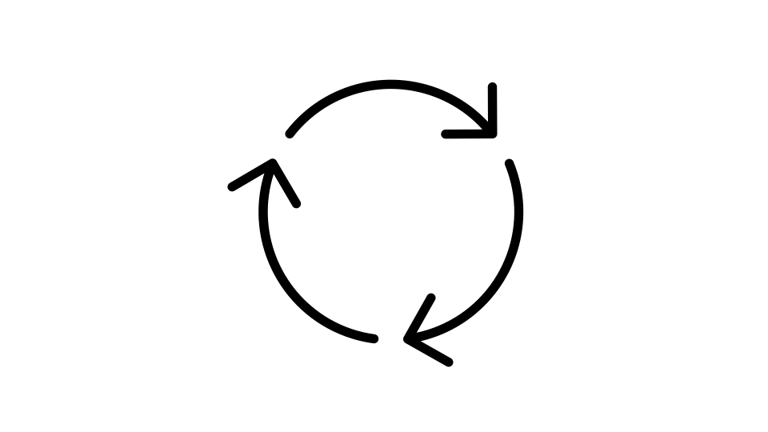

GARDE-Chat
Build Research-Ready Health Chatbots Without Programming Skills

GARDE-Chat is an open-source platform for creating fully scripted, AI-enabled, and hybrid chatbots for healthcare and clinical research. Designed for researchers, clinicians, and healthcare organizations, GARDE-Chat makes it possible to build and deploy conversational experiences through a visual drag-and-drop interface — without requiring advanced programming skills.
GARDE-Chat use cases
Health Education
Patient Engagement
Clinical Research Recruitment and Retention
Symptom Monitoring and Follow-Up
Access to Healthcare Services
Behavioral and Lifestyle Interventions
Chatbots created with GARDE-Chat can be delivered through web browsers or SMS/text messaging.
Advantages of GARDE-Chat
No-Code Chatbot Development
GARDE-Chat allows non-programmers to design chatbot workflows using a visual interface instead of custom code. Researchers and institutions can collaborate by sharing chatbot designs and adapting them across studies and populations.
Flexible Approaches
GARDE-Chat supports the following types of chatbots
Scripted
Fixed conversation flows
Predictable responses
High consistency

Hybrid
Mix of scripted content and AI
Balanced flexibility
Controlled responses
LLM-enabled
More open-ended AI conversation
Uses large language models
Natural language interaction
This flexibility allows teams to balance consistency, scalability, and conversational flexibility based on the needs of a project.
Designed for Research and Clinical Studies
|
GARDE-Chat supports a wide range of study designs, from pilot studies to large pragmatic clinical trials. The platform includes:
GARDE-Chat can integrate with varied systems, including:
|
Accuracy, Safety, and Guardrails
|
Healthcare organizations and researchers often have concerns about AI-generated misinformation, hallucinations, and unintended medical advice. GARDE-Chat includes the following approaches, which support safer and more controlled chatbot experiences. |
Scripted and Hybrid Workflows
Teams can create fully scripted chatbots with fixed questions and responses, reducing variability and helping ensure consistency and accuracy.
Hybrid chatbot designs allow organizations to keep core educational or clinical content fully scripted while limiting where AI-generated responses are used.
Controlled Access to LLMs
When large language models are used, participants interact with the chatbot through the GARDE-Chat interface rather than directly with the model itself. Researchers can configure prompts, workflows, and constraints to help guide chatbot behavior.
Privacy and Data Protection
|
GARDE-Chat was designed with healthcare and research privacy requirements in mind. |
On-Premise Deployment Options
Scripted chatbots can be deployed on HIPAA-compliant institutional infrastructure, allowing participant data to remain within the organization’s environment.
Support for Self-Hosted Open-Source Models
GARDE-Chat can integrate with open-source large language models that are deployed within an institution’s own secure infrastructure.
Compatibility with Enterprise LLM Environments
Some institutions maintain HIPAA-compliant agreements and environments for commercial LLM providers such as OpenAI or Google. GARDE-Chat can be configured to work within those institutional environments when available.
Institutional privacy, security, and compliance requirements vary, and organizations should evaluate deployment configurations based on their own policies and regulatory obligations.
Security and Real-World Use
GARDE-Chat was developed by researchers at the University of Utah with support from the National Cancer Institute and other funding sources.
The platform has been used in multiple research studies and pragmatic clinical trials, including studies involving large participant populations.
GARDE-Chat has also been used in research collaborations involving institutions such as:
- University of Utah
- Medical University of South Carolina
- Wake Forest University School of Medicine
- Weill Cornell Medicine
Contact information
For additional information or collaboration opportunities, email the GARDE team.